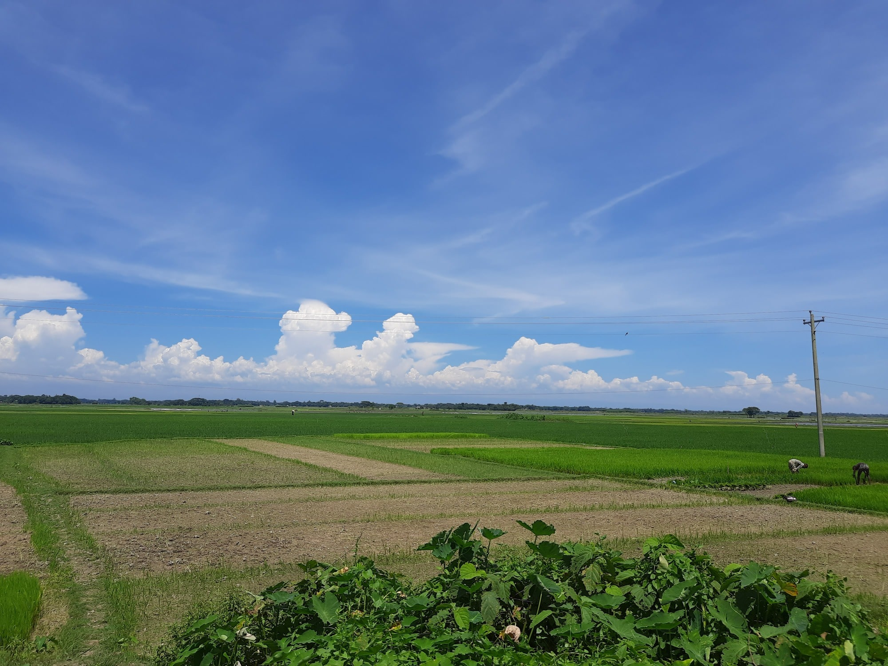
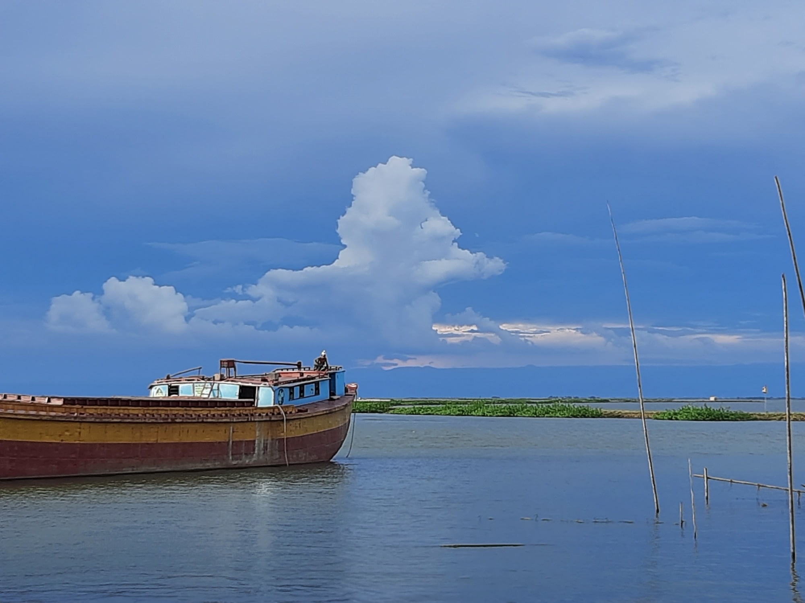
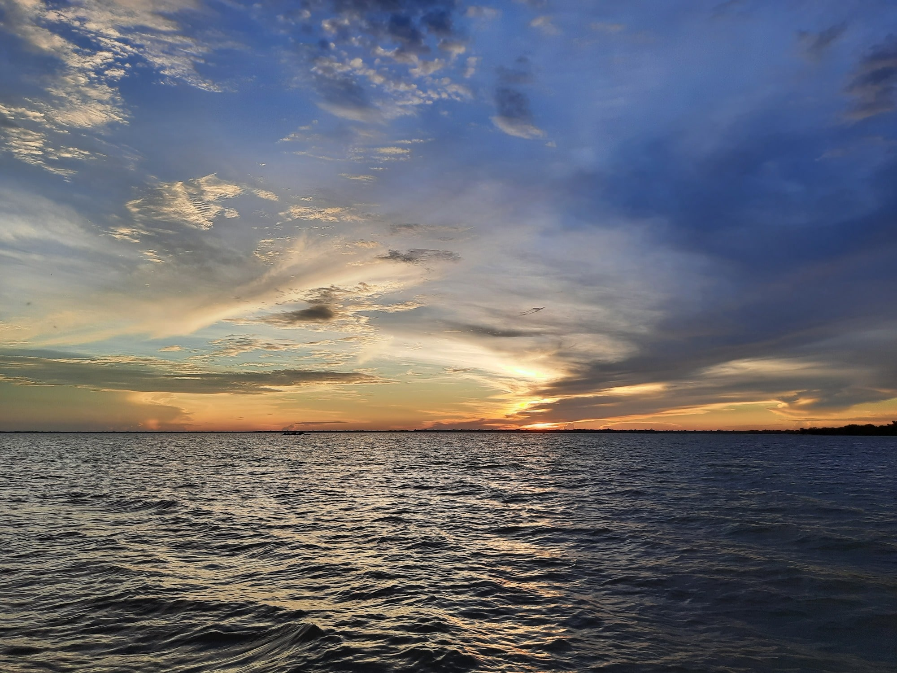
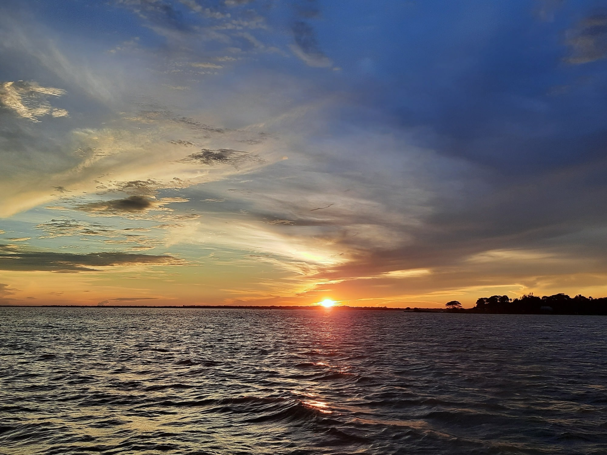

গাগলাজুর-২০২১
ছোট্ট একটা ট্যুরের জন্য অনেকদিন থেকেই মন ভার হয়েছিল। শেষে কলমাকান্দার পাচগাও এর বদলে মোহনগঞ্জের গাগলাজুরই সই। নেত্রকোনা থেকে গাগলাজুর যেতে হলে প্রথমেই যেতে হবে মোহনগঞ্জ। সেখান থেকে অটোরিকশায় বা মোটরসাইকেল যোগে ডিঙ্গাপুতা ট্রলারঘাট। ডিঙ্গাপুতা হাওর নেত্রকোনার সবচেয়ে বড় হাওর। সেই ট্রলারঘাট থেকেই গাগলাজুর, খালিয়াজুরির ট্রলার ছাড়ে।
গাগলাজুর সুগভীর ধনু নদের তীরে অবস্থিত। এই নদে লঞ্চ, ট্রলার, বার্জ, স্টিমার, জাহাজ সবই চলে। নদের বর্ষাকালীন তীব্র স্রোতের হাত থেকে হাওর এলাকার ফসল রক্ষার জন্য সম্প্রতি বাঁধ তৈরি করা হয়েছে। আমাদের যৎসামান্য ট্যুরের উদ্দেশ্য সেই জায়গাই।
* Images used here are raw and non-edited.
যাত্রা হলো শুরু

সুন্দর একটা দিন
ঐ দেখা যায় ডিঙ্গাপুতা
আমরা

গুচ্ছগ্রাম
কোথাও আমার হারিয়ে যাওয়ার নেই মানা
ধনু নদের বাঁধে

দূরের পাহাড়
অভিযাত্রী

সে যে আকাশ নয়, মায়া, মেঘের আড়ালে চুপিচুপি করে খেলা


যাবার বেলায়...
10th September, 2021